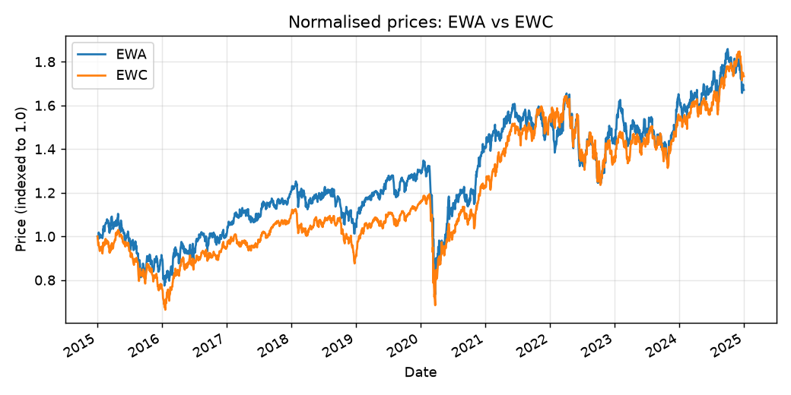
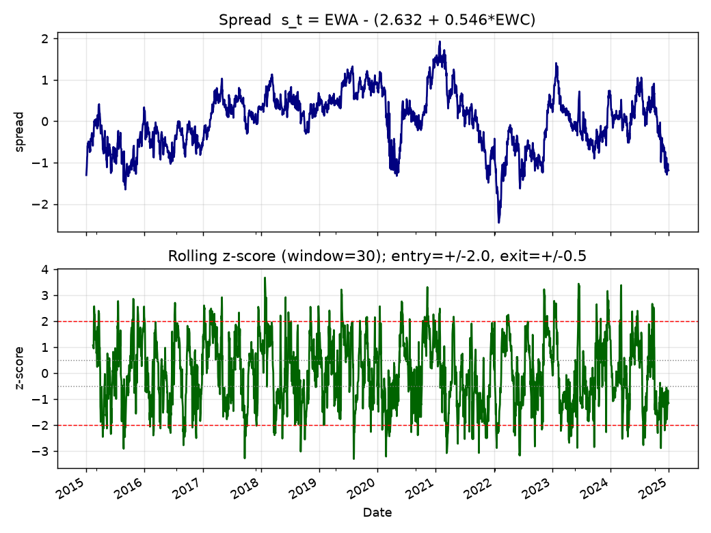
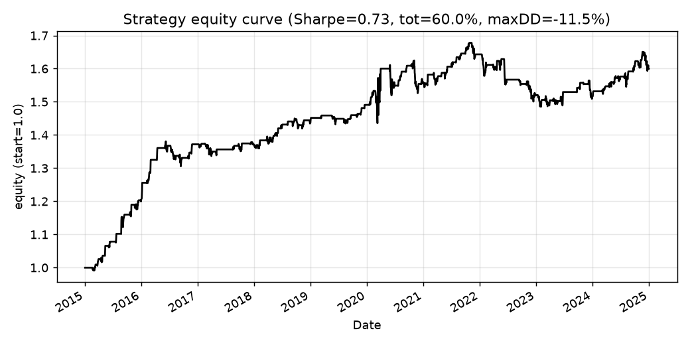
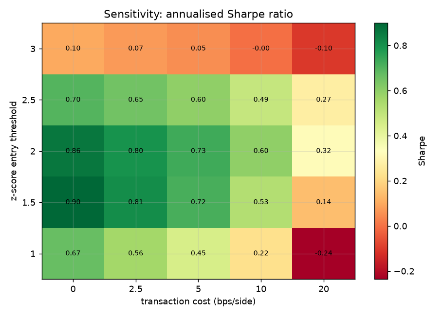

This research builds a market-neutral pairs-trading strategy on EWA (iShares MSCI Australia) and EWC (iShares MSCI Canada), two commodity-linked country ETFs. We test for a long-run equilibrium relationship, construct a mean-reverting spread, and trade its deviations with a rolling z-score rule — reporting honest, reproducible metrics on 2,515 daily observations (2015-01-02 → 2024-12-30).
Net of 5 bps/side transaction costs; entry ±2σ, exit ±0.5σ, rolling window 30 days.
Both the Engle–Granger two-step test and the Johansen trace test agree that the pair is cointegrated.
| Test | Statistic | p-value / 95% crit. |
|---|---|---|
| Engle–Granger cointegration | -3.694 | p = 0.0186 |
| ADF on spread residual | -3.692 | p = 0.0042 |
| Johansen trace (r=0) | 20.061 | crit₄₅ = 15.494 |
| OLS hedge ratio β | 0.5458 | |

The traded spread is sₜ = EWA − (2.632 +
0.546·EWC). We enter when the rolling z-score
breaches ±2 and exit when it reverts inside
±0.5.


Annualised Sharpe ratio across entry thresholds (rows) and per-side transaction costs (columns). The edge peaks at moderate thresholds and decays monotonically as costs rise.
| Entry z* | 0 bps | 2.5 bps | 5 bps | 10 bps | 20 bps |
|---|---|---|---|---|---|
| 1 | 0.67 | 0.56 | 0.45 | 0.22 | -0.24 |
| 1.5 | 0.90 | 0.81 | 0.71 | 0.53 | 0.14 |
| 2 | 0.86 | 0.80 | 0.73 | 0.60 | 0.32 |
| 2.5 | 0.70 | 0.65 | 0.60 | 0.49 | 0.27 |
| 3 | 0.10 | 0.07 | 0.05 | -0.00 | -0.10 |

Everything runs offline from a bundled CSV:
pip install -r requirements.txt
python src/run_analysis.py # cointegration + backtest + figures
python -m pytest tests/ -q # 15 unit tests
~/.local/bin/tectonic -X compile paper.tex --outdir .